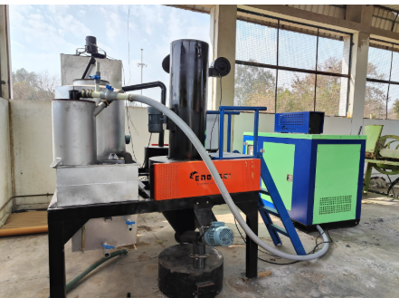

Biomass Gasifier: Harnessing Clean Energy from Crop Residue
From Smoke to Spark – The Green Energy Revolution in Rural India

The Energy Challenge & the Untapped Opportunity
India generates over 500 million tonnes of agricultural residue every year—much of which is either burned in the open or left to decay, releasing CO₂, methane, and harmful particulates. Meanwhile, rural and industrial users still rely heavily on expensive fossil fuels and unreliable grid power. Converting crop residue into clean, affordable energy through biomass gasification turns an environmental liability into a valuable, low-carbon resource.
What is a Biomass Gasifier?
A biomass gasifier is an engineered reactor that converts solid organic matter—such as paddy straw, wheat stubble, cotton stalk, coconut shells, or sawdust—into a combustible gas called producer gas (a mix of CO, H₂, CH₄, and N₂). Think of it as a high-efficiency, controlled bonfire inside a sealed chamber: instead of smoke and ash, you get a versatile gaseous fuel. This green technology offers a cost-effective and eco-friendly alternative to traditional fuels like LPG and diesel, especially in remote or off-grid locations.
How Does It Work?
- Crop residue is fed into the gasifier.
- Inside, the fuel is heated at high temperatures in low oxygen.
- This produces a clean-burning gas called producer gas.
- The gas runs a generator, giving electricity, or is used directly for heating.
- No LPG, No Diesel – just pure Power from Agricultural Waste!
Why Crop Residue?
- Abundant & Affordable: India generates millions of tons of crop residue each year—much of which is left unused or mismanaged.
- Reduces Open-Field Burning: Helps reduce PM₂.₅ and NOₓ pollutants.
- Creates Income for Farmers: Agricultural residue becomes a valuable, sellable resource.
- Promotes Circular Economy: Biochar improves soil and locks carbon into the ground.
Common Types of Crop Residue
Biomass gasifiers can use:
- Cotton stalks
- Paddy straw & wheat straw
- Maize cobs & sugarcane bagasse
- Mustard stalks & groundnut shells
- Coconut shells & husk
- Wood chips & sawdust
Environmental & Economic Benefits
Environmental:
- Reduces greenhouse gas emissions and black carbon
- Replaces fossil fuels with renewable alternatives
- Helps meet carbon credit targets
Economic:
- Saves 60–70% on LPG/diesel/furnace oil
- Lowers cooking and process heat expenses
- Creates rural employment opportunities
Applications in India
- Commercial Kitchens – dhabas, hostels, food stalls
- Rural Microgrids – decentralized electricity generation
- Agro-Processing Units – tea dryers, spice mills, rice mills
- Industrial Heat – ceramic kilns, foundries
- Carbon Farming – biochar for sustainable agriculture
Why Choose ESB-R Gasifier?
- 100% flexibility: wood, pellets, briquettes, crop residue
- Capacity from 5 kW to 1 MW+
- Smokeless, low-maintenance, over 80% efficiency
- Corrosion-resistant build, portable options available
- Strong service support & training
Conclusion: Powering the Future
A Biomass Gasifier is not just a machine—it’s a solution to India's dual challenge of crop waste and rural energy. It helps cut fuel costs, reduce pollution, empower communities, and unlock carbon credits.
Switch to smart energy. Switch to a Biomass Gasifier.